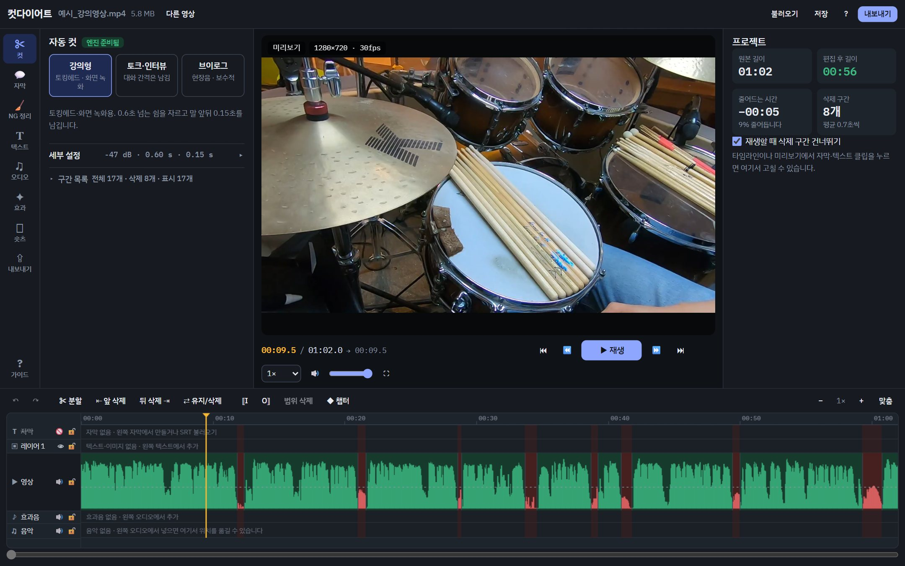
데스크톱 크롬이나 엣지에서 열면 모든 기능이 됩니다. 휴대폰과 사파리에서는 분석·편집까지만 되고 MP4 만들기는 안 될 수 있습니다.
| 항목 | 내용 |
|---|---|
| 잘 맞는 영상 | 혼자 말하는 강의, 화면 녹화 설명, 브이로그 내레이션, 인터뷰 |
| 안 맞는 영상 | 촬영 때부터 배경음악이 깔린 영상, 여러 명이 동시에 말하는 영상, 현장음이 큰 영상 (배경음악은 여기서 나중에 깔 수 있습니다) |
| 길이 | 10분 안팎이 가장 쾌적, 30분까지 무리 없음. 1시간이 넘으면 분석과 편집 프로그램용 파일만 만들어집니다 |
| 파일 형식 | MP4, MOV, WebM, MKV. 음성만 있는 파일(MP3·WAV·M4A)도 가능 |
| 컴퓨터 사양 | 메모리 8GB 이상 권장. 자동 자막은 처음 한 번 음성 인식 모델(약 760MB)을 내려받습니다 |
| 영상은 어디로 | 어디에도 올라가지 않습니다. 결과 파일은 내가 고른 위치(또는 다운로드 폴더)에만 저장됩니다 |
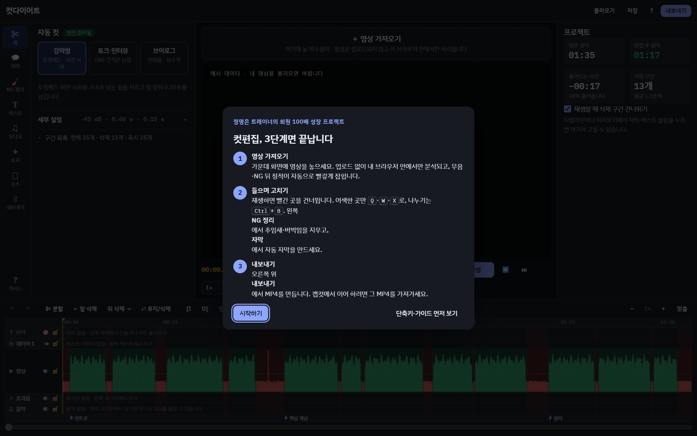
캡컷과 같은 배치입니다. 한 번 익히면 어느 기능이든 같은 자리에서 찾습니다.
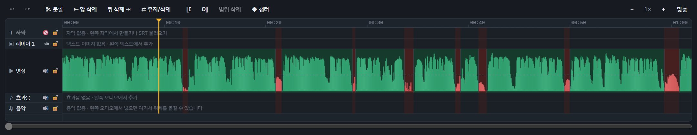
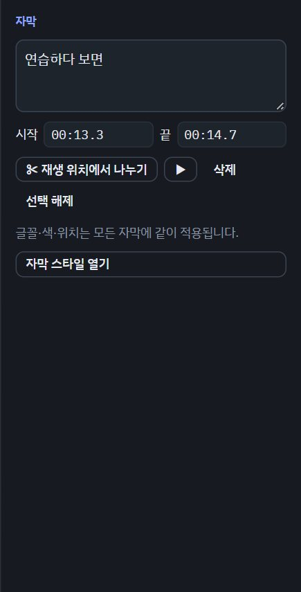
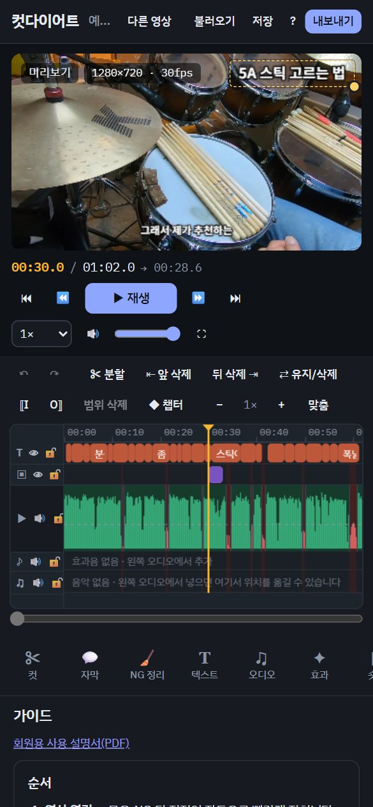
들으면서 어색한 자리에 멈추고 키 하나를 누르는 게 전부입니다. 타임라인을 클릭하면 그 위치로 가고, 더블클릭하면 그 구간이 남김↔삭제로 바뀝니다. 구간 경계선은 끌어서 미세 조정합니다.
| 키 | 동작 | 이럴 때 |
|---|---|---|
| Space | 재생 / 일시정지 | |
| J K L | 뒤로 / 멈춤 / 앞으로 (한 번 더 누르면 2배속 → 4배속) | 빠르게 훑어볼 때 |
| S 또는 Ctrl+B | 재생 위치에서 나누기. 그 자리의 자막·텍스트도 함께 둘로 나뉩니다(자막은 말이 끊기는 자연스러운 곳에서) | 구간 일부만 지울 때: 나눈 뒤 한쪽을 X |
| Q / W | 재생 위치 앞부분 / 뒷부분 삭제 | 말 앞 잡담, 말 끝 정적 |
| X | 현재 구간 남김 ↔ 삭제 | 잘못 잘린 구간을 살릴 때 |
| Delete | 고른 클립 삭제 (고른 게 없으면 현재 구간 삭제) | |
| I / O | 범위 시작 / 끝 표시 → "범위 삭제" | 긴 부분을 한 번에 지울 때 |
| Ctrl+Z | 되돌리기 (Ctrl+Shift+Z 다시 실행) | 뭐든 실수했을 때 |
| ← → | 1초 이동 (Shift 함께: 5초, , .: 1프레임) | |
| [ ] | 이전 / 다음 컷 경계로 | 컷만 빠르게 확인할 때 |
| M | 현재 위치에 챕터 | 내용이 바뀔 때마다 |
| F | 미리보기 전체 화면 |
맥에서는 Ctrl 대신 ⌘도 됩니다. 한글 입력 상태여도 단축키는 그대로 작동합니다.
| 증상 | 바꿀 것 (컷 메뉴 → 세부 설정) |
|---|---|
| 말 첫 음절이 자꾸 잘린다 | 말 앞뒤 여백을 0.25초로, 말소리 기준을 낮춰서(-48) |
| 숨소리·잡음까지 남는다 | 말소리 기준을 올려서(-36) |
| 짧은 쉼까지 다 잘려 숨 가쁘다 | 프리셋을 토크·인터뷰로, 또는 구간 목록의 "0.4초 미만 되살리기" |
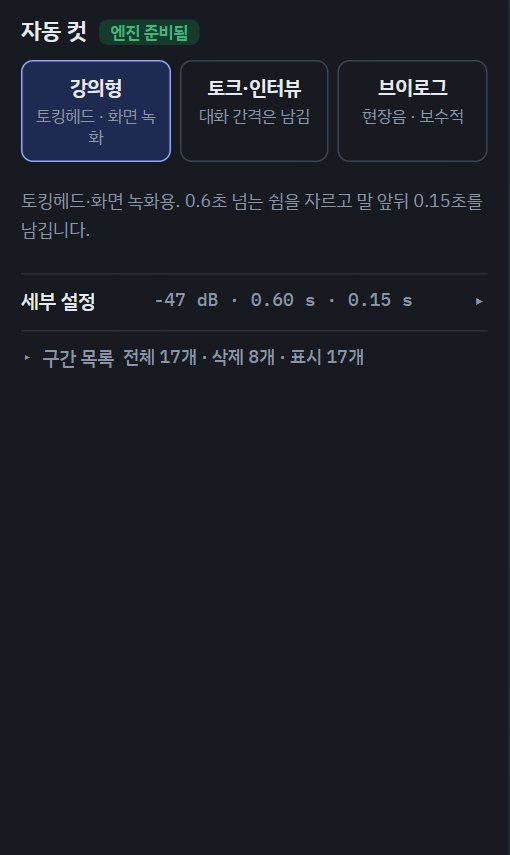
| 알아 두면 좋은 것 | 내용 |
|---|---|
| 정확도 | 기본 모델(가장 정확 · large-v3-turbo)로 실제 강의 영상에서 틀린 단어가 약 4~5%였습니다(이전 모델 11%). 급할 때는 "인식 설정"에서 빠름(small)을 고르면 2배 빠르지만 덜 정확합니다 |
| 한 줄 자막 | 자막은 늘 한 줄입니다. 한 줄 16자(한글 1자, 영문·숫자·띄어쓰기 0.5자)가 기본이고, 숏츠는 12자, 길게는 20자. 화면보다 길면 글자가 자동으로 작아집니다 |
| 자연스러운 끊기 | 문장 끝(-습니다, -어요)에서 끊고, "그리고·그래서"는 다음 줄 앞으로, "작은 / 것을"처럼 말이 이어지는 곳은 끊지 않습니다. 고친 뒤에는 "문장 단위로 다시 나누기" |
| 읽기 속도 | 초당 12자 이하로 읽히도록 표시 시간을 맞추고, 줄 끝 마침표·쉼표는 뺍니다 (넷플릭스 한국어 자막 기준) |
| SRT 파일 | 내보내기 → SRT(편집 후 시간)를 캡컷이나 유튜브에 그대로 올릴 수 있습니다. 반대로 SRT 불러오기도 됩니다 |
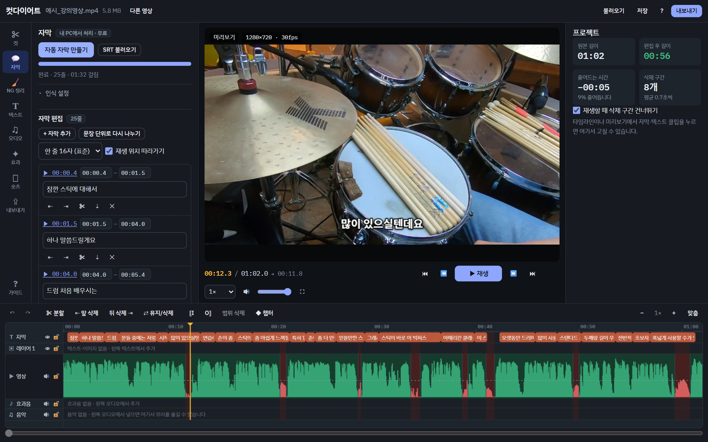
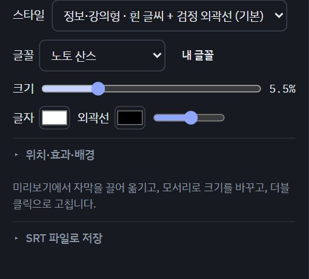
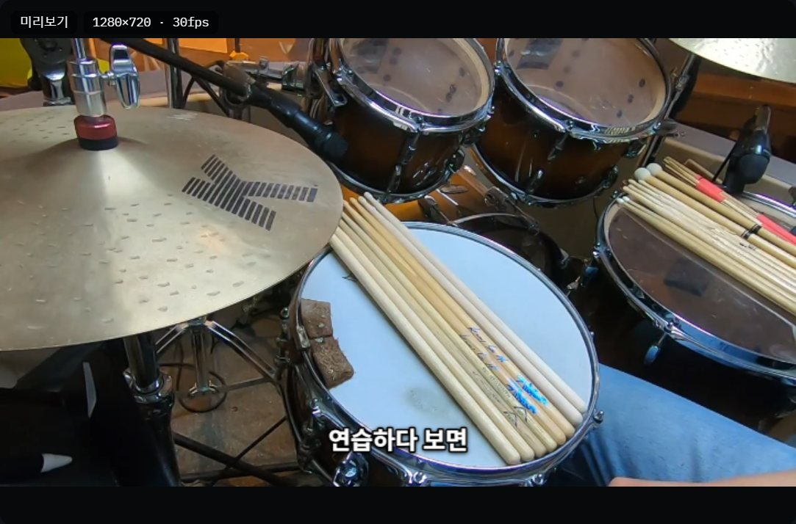
영상을 넣으면 자막 없이도 소리만으로 길게 끈 "어…·음…", 같은 소리로 다시 시작한 말 버벅임, 다시 말한 NG를 후보로 찾습니다. 자동 자막을 만들면 말 내용까지 보고 더 정확하게 다시 찾습니다.
종류별로 켜고 끌 수 있습니다: 추임새, 말 버벅임("그 그러니까"·말 꼬임), 다시 말한 NG, 웅얼거림(인식 안 된 소리). 타임라인에는 후보 자리가 따로 표시됩니다.
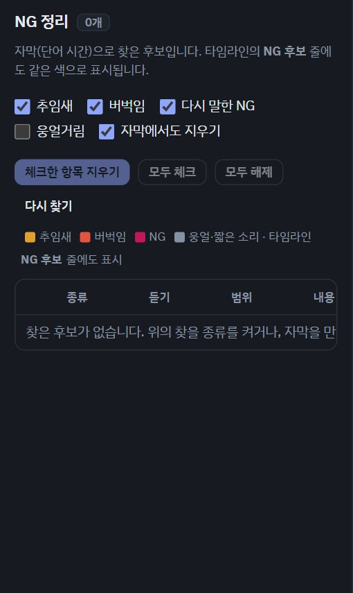
| 메뉴 | 쓰는 때 | 핵심 사용법 |
|---|---|---|
| 텍스트 | 강조 문구, 제목, 로고·워터마크 | 문구 입력 → 텍스트 추가(재생 위치부터 3초). 미리보기에서 끌어 옮기고, 오른쪽 속성 창에서 글꼴·색·크기·시간. 여러 개가 겹치면 레이어로 위아래 쌓입니다. 이미지·로고는 범위 "영상 전체"로 두면 워터마크 |
| 오디오 | 배경음악, 효과음 | 음악 파일 선택 → 음량(15~25% 권장) → "말할 때 음악 줄이기" 켜기. 타임라인 음악 트랙을 끌어 시작 위치 조절. 효과음은 재생 위치에 추가 |
| 효과 | 점프컷 숨기기, 화면 전환 | 자동 줌(컷마다 살짝 확대해 튐을 가림), 구간 줌, 페이드 인/아웃, 디졸브, 밝기·대비·채도 |
| 숏츠 | 같은 영상으로 세로 숏츠 | 시작/끝 "현재 위치로" → 미리보기의 노란 9:16 틀을 끌어 위치 → 숏츠 MP4 만들기. 자막·텍스트·효과도 같이 들어갑니다 |
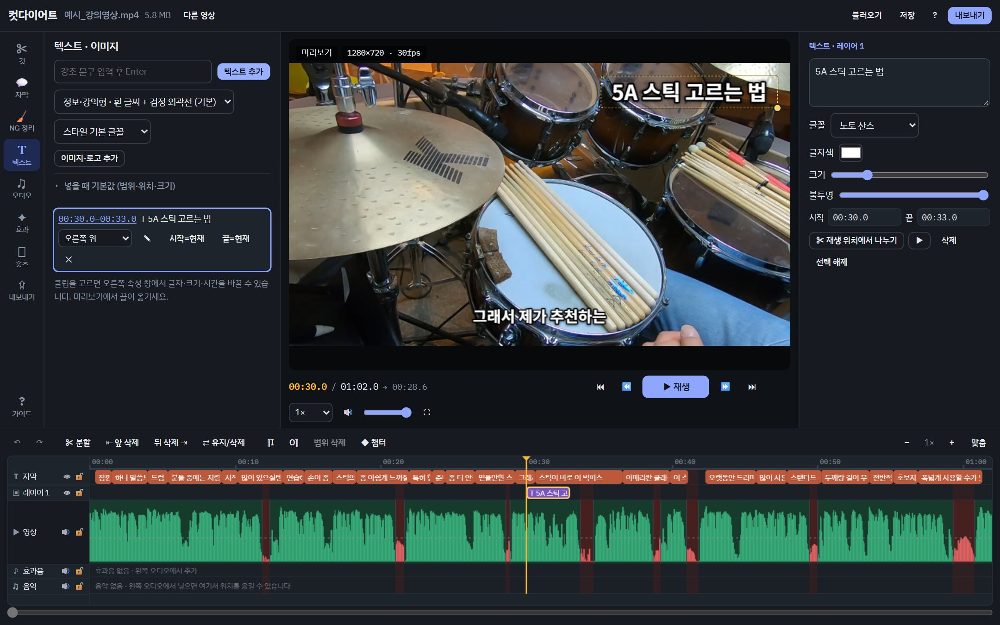
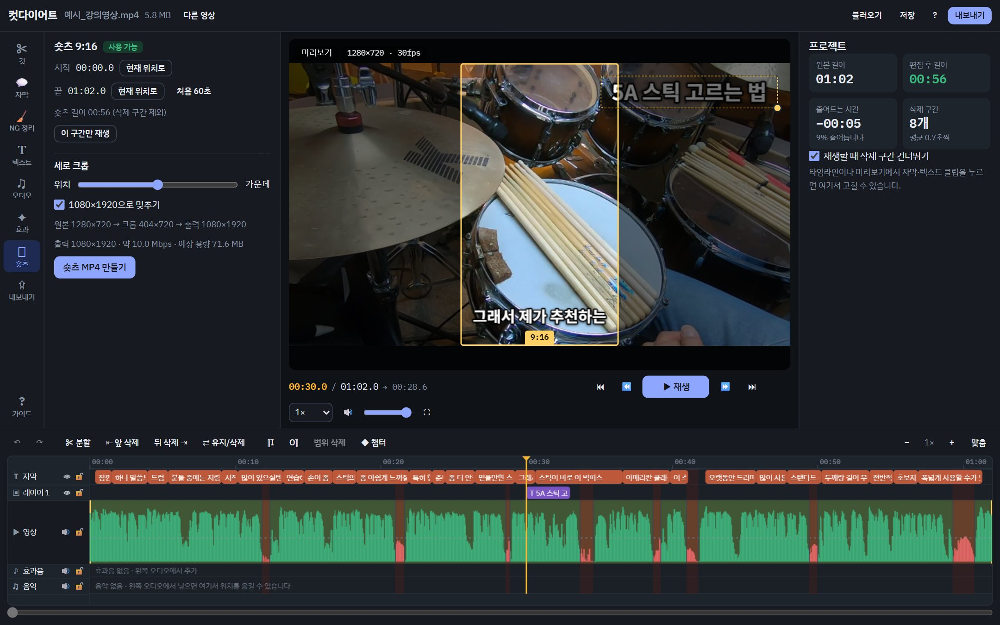
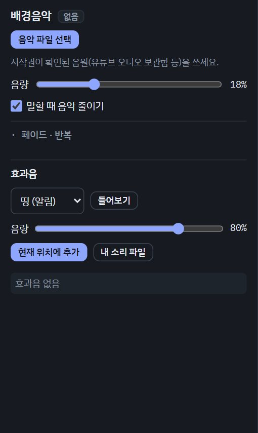
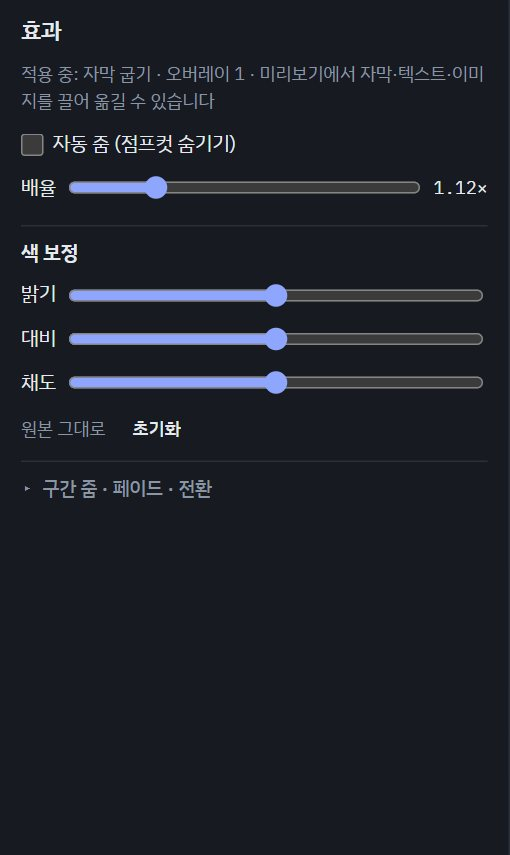
| 결과물 | 쓰는 곳 |
|---|---|
| MP4 | 유튜브 업로드, 캡컷 가져오기. 화질은 "고화질 · 원본 해상도" 권장 |
| SRT 자막 | 유튜브 자막 업로드, 캡컷 자막 가져오기 (편집 후 시간으로 딱 맞음) |
| 유튜브 챕터 | 설명란에 붙여 넣는 타임스탬프 (첫 챕터 0:00, 3개 이상, 10초 간격을 자동 검사) |
| 썸네일 후보 | 목소리에 힘이 있는 순간의 프레임 → JPG |
| EDL · XML · FFmpeg | 프리미어·다빈치·파이널컷 사용자용 컷 패키지 (캡컷은 필요 없음) |
| 프로젝트 파일 | 다른 컴퓨터에서 이어서 작업할 때만. 같은 컴퓨터는 같은 영상을 다시 열면 이어서 할지 묻습니다 |
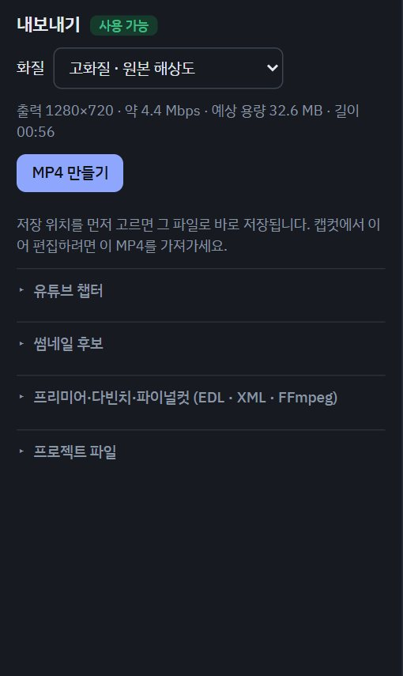
편집 기능(컷·자막·NG 정리·텍스트·오디오·효과·숏츠·내보내기)은 두 버전이 똑같습니다. Pro는 영상을 많이, 자주, 빠르게 처리하는 사람을 위한 자동화와 속도 도구가 더해진 버전입니다.
| 항목 | 무료 (cutdiet.vercel.app) | Pro (/pro.html) |
|---|---|---|
| 편집 기능 전체 | ✔ 같음 | ✔ 같음 |
| 여러 영상 한 번에 | 한 번에 한 영상 | 큐 자동 처리: 여러 파일을 넣으면 분석 → MP4 → 숏츠 → 썸네일 → 프로젝트 저장까지 차례로 |
| 채널 기본값 | 매번 프리셋·화질 선택 | 프리셋·화질·크롭 위치·음악 음량을 고정해 새 영상에 자동 적용 |
| 저장 | 파일마다 저장 위치 선택 | 출력 폴더를 한 번 정하면 저장 창 없이 쌓임 |
| 단축키 | 기본 단축키 | 숫자키 1~9로 메뉴 전환, 모든 단축키를 원하는 키로 변경, 단축키 표(/) |
| 편집 기록 | 없음 | 영상마다 원본·편집 후 길이, 컷 비율, 수동 수정 횟수, 편집 시간을 기록하고 추세 그래프·CSV |
| 로컬 엔진 (선택) | 브라우저만 사용 | 내 PC에 설치하는 작은 엔진(Node.js): FFmpeg 하드웨어 렌더(길이 제한 없음, 1시간 이상 영상), 워치 폴더(폴더에 넣으면 자동 처리), 탐색기로 파일 열기, CPU 전체 코어로 더 빠른 음성 인식 |
| 대상 | 회원 누구나 | 운영자·영상을 매주 여러 개 만드는 사람 |
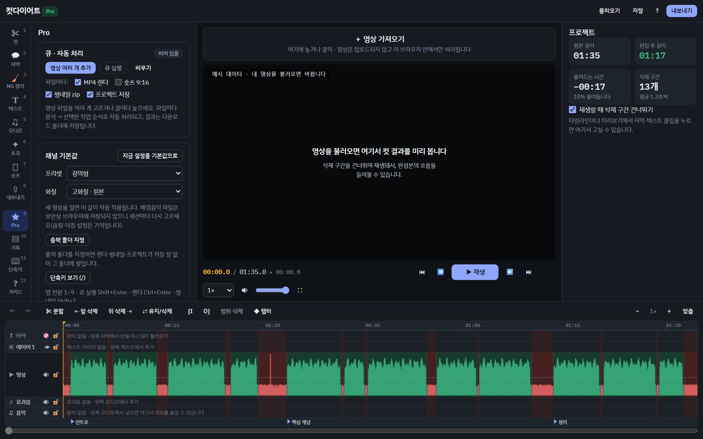
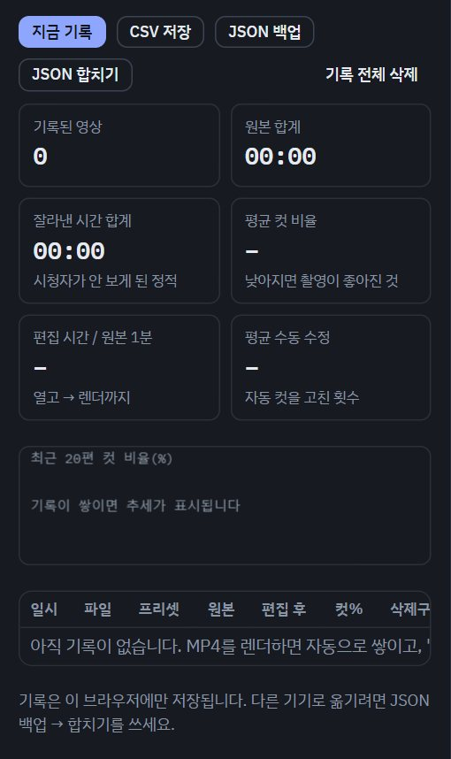
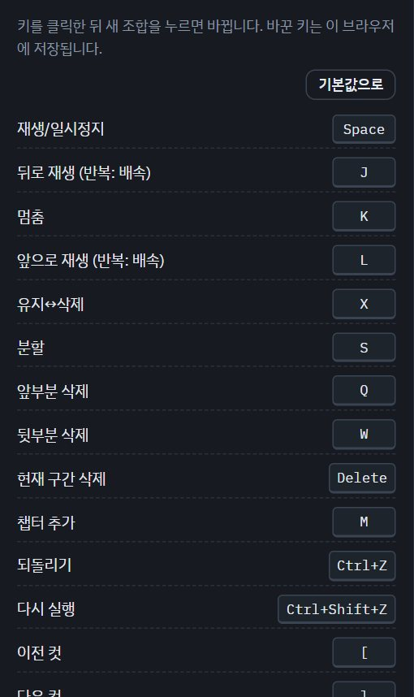
| 증상 | 조치 |
|---|---|
| "이 파일을 분석하지 못했습니다" | 카메라 원본 코덱을 브라우저가 못 읽는 경우. 휴대폰·카메라 설정에서 "호환성 우선(H.264)"으로 촬영하거나, 한 번 MP4(H.264)로 변환해 넣으세요 |
| 분석은 되는데 화면이 검은색 | 브라우저가 재생만 못 하는 형식. 컷·내보내기는 그대로 되고, 들어보려면 MP4(H.264)로 변환 |
| MP4 만들기 버튼이 회색 | 버튼 아래 회색 글씨에 이유가 적혀 있습니다. 대개 "크롬·엣지 데스크톱에서 열기" 또는 "1시간 초과" |
| 저장 창을 닫았더니 렌더링이 시작되지 않는다 | 정상입니다. 저장 위치를 고르지 않으면 시작하지 않습니다. MP4 만들기를 다시 누르세요 |
| 렌더링이 중간에 실패 | 화질을 1080p나 720p로 낮춰 다시. 다른 탭·프로그램을 닫으면 메모리가 늘어납니다 |
| 자동 자막이 너무 오래 걸린다 | "인식 설정"에서 빠름(small)으로 바꾸면 약 2배 빠릅니다(정확도는 낮아짐). 처음 한 번은 모델 다운로드 시간이 더해집니다. 메모리가 부족하면 다른 탭을 닫으세요 |
| 자막에 틀린 단어가 있다 | 목록이나 속성 창에서 고치고, 같은 오타는 "찾아 바꾸기". 무음 구간의 헛소리는 자동으로 걸러집니다 |
| 자막이 너무 짧게/길게 끊긴다 | "한 줄 글자 수"를 12·16·20자 중에서 바꾸고 "문장 단위로 다시 나누기" |
| 자막 글자가 작아졌다 | 한 줄이 화면보다 길어 자동으로 줄인 것입니다. 그 줄을 나누거나(속성 창 ✂) 글자 수를 줄이세요 |
| 배경음악이 다음에 열면 사라져 있다 | 음악 파일은 브라우저에 저장되지 않습니다. 다시 선택하면 음량·덕킹 설정은 그대로 있습니다 |
| 이전 작업을 이어서 하고 싶다 | 같은 컴퓨터: 같은 영상을 다시 열면 복구 여부를 묻습니다. 다른 컴퓨터: 위 막대 저장(.json) 후 불러오기 |
| 영상이 어디에 저장되나 | 저장되지 않습니다. 브라우저 탭을 닫으면 영상은 메모리에서 사라지고, 컷·자막 정보만 남습니다 |
이 도구는 회원들의 사용 기록으로 고쳐 나갑니다. 한 줄이면 충분합니다.
[길이]분 [종류] 영상, [기능]에서 [증상], [걸린 시간] 예) 12분 강의 영상, 자동 자막에서 "5A"가 "오에이"로 나옴, 11분 걸림
증상은 해석하지 말고 보인 그대로 적어 주세요. 화면의 안내 문구나 오류 메시지가 있으면 그 문장도 같이. 어떤 브라우저(크롬/엣지)인지도 한 단어로.
보낼 곳: ____________________ (카톡방 / 댓글 등 채널)
컷다이어트 v2.3 · cutdiet.vercel.app · 영상은 업로드되지 않고 내 브라우저 안에서만 처리됩니다. 음성 인식에는 Whisper(MIT), 영상 처리에는 mediabunny(MPL-2.0)·transformers.js(Apache-2.0)가 쓰였습니다. 자막 길이 기준은 Netflix Korean Timed Text Style Guide를 참고했습니다.